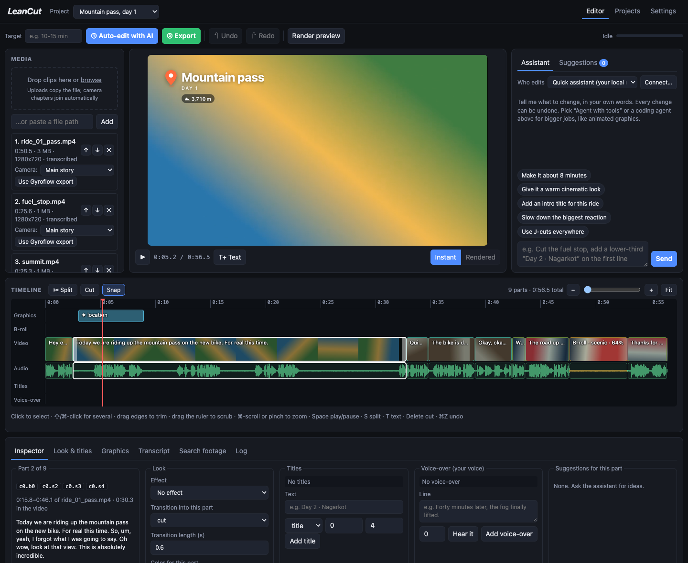
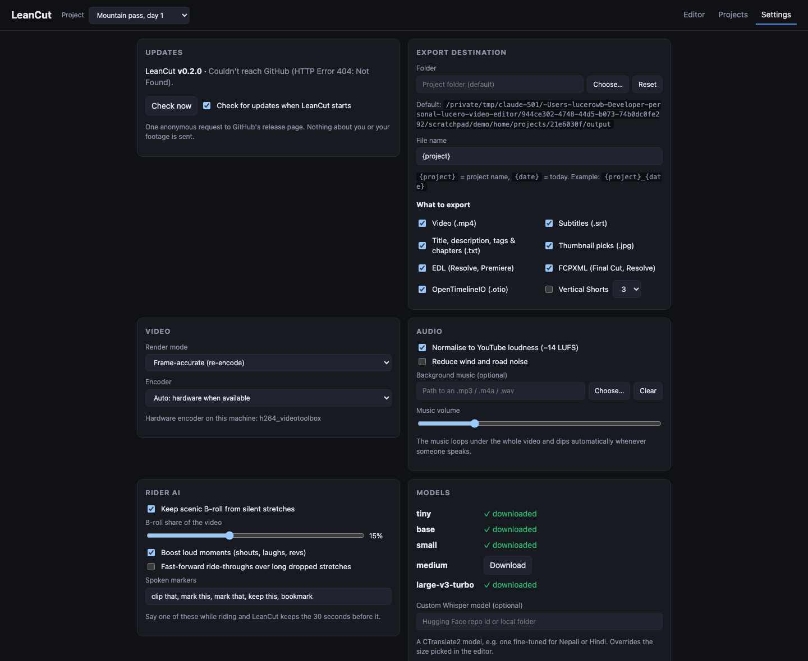
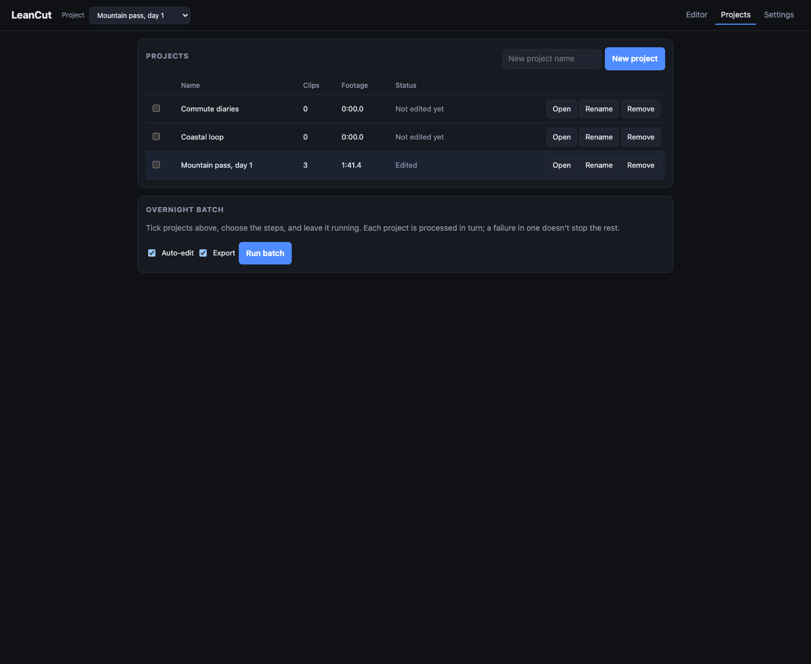

Ride all day.
Cut it before dinner.
LeanCut listens to hours of helmet-cam and vlog footage, transcribes it, lets an AI model on your own computer pick the moments worth keeping, and renders the cut. Want it shorter, warmer or with a title? Tell the assistant and watch the change straight away. Your footage never leaves the machine.
Four passes, all on your machine
Each clip goes through the same pipeline. Then you review and polish the result in the editor, by hand or by asking the assistant, before the final render.
Listen
Pulls the audio out of every clip and drops silence, wind roar and engine drone with voice-activity detection.
FFmpeg + Silero VADTranscribe
Turns the talking into timecoded sentences. Works in 99 languages and can translate to English as it goes.
faster-whisperJudge
A local language model scores every line from 1 to 5, with a confidence. Retakes, loud reactions, GoPro telemetry and your spoken “clip that” markers count too. LeanCut keeps the best until your target length is reached.
Ollama · LM StudioCut
Stitches the kept lines and the best silent scenery into one loudness-matched video with your looks, titles and transitions, plus files to finish in your usual editor.
MP4 · SRT · EDL · FCPXML · OTIO
Everything a long ride needs
Talking-head editors throw away everything without words. LeanCut knows a ride is more than talk.
- AgentsAgents that edit with youAn agent with tools on your own local model, or Claude Code, Codex and other coding agents connected over MCP. They read the edit, change it with undoable actions, and look at frames of the finished video to check their work.
- GraphicsAnimated graphicsTitles, lower thirds, chapter cards, location pins, end screens, and a speedometer and route map from your GoPro's GPS. Each is a web page that draws any moment, in OpenFilm's page format, so an agent can write new ones.
- EditAI assistantType “make it about 8 minutes” or “give it a warm cinematic look”. Your local model turns it into checked edit actions, and one undo takes them all back.
- EditSuggestions for every partUnsure lines, a missing intro title, J-cuts, a punch-in on long talking, slow motion on the big reaction. Apply or dismiss each one.
- EditTimeline & instant previewFilmstrip and waveform, trimming that snaps between words, split, multi-select, text you place right on the video, and cutting words straight from the transcript. Plays at once from your files; Render preview makes an exact 540p version.
- LookEffects, transitions & colourPunch-ins, slow motion, 15 transitions, auto colour, presets, sliders and LUTs, titles, intro and outro cards, burned-in captions.
- VoiceVoice-overs in your voiceType a line and hear it in your own cloned voice, mixed in with the ride ducked underneath. Runs locally, and only with your consent.
- AIDecision engineScores come from the model's token probabilities, with a confidence for every line. Unsure lines become your call, and it learns from your overrides.
- RidesScenic B-roll, in story orderSilent stretches are scored for movement, colour and exposure and laid over the talking of their own scene, in the order you filmed them. An optional local vision model looks at the best ones.
- RidesGoPro telemetryThe GPS track finds hard braking, twisties, top speed and summits, and keeps motorways and stops out of the B-roll.
- RidesSay “clip that”Shout a marker phrase mid-ride and the 30 seconds before it stay in. Shouts, laughs and revs lift what was said there.
- PrivacyFace & plate blurTwo small on-device detectors blur faces and licence plates in the video before you publish it.
- SoundClean voice, YouTube loudnessNeural enhancement lifts your voice out of engine rumble. −14 LUFS, music that ducks under speech, and an optional profanity bleep.
- FindSearch by what's on screenFind “lake” or “hairpin” across all your footage with an on-device image model, and drop a hit into the cut.
- WorkflowChapters & stabilisationSplit camera files join into one clip automatically. Shaky shots get vid.stab, or swap in your Gyroflow export.
- PublishReady to uploadThe MP4, subtitles, a YouTube title, description and chapters, thumbnail picks, and vertical Shorts that follow the subject.
- WorkflowProjects, batch & updatesEvery trip its own project, an overnight batch, second-camera sync, hardware encoding, and updates you install from inside the app.
One window, from raw ride to upload



Your rides stay yours
- No uploadsA 4K ride is tens of gigabytes. LeanCut reads it where it sits on your drive.
- No subscriptionWhisper and the language model are free, open models running on your own CPU or GPU.
- Works offlineAfter the one-time model downloads you can edit on a laptop at a campsite.
- You have the final sayEvery line shows its score and reason, and every edit can be undone. Nothing is rendered until you export.
Hand the cut to your editor
- EDL
- FCPXML
- OpenTimelineIO
- SRT
TITLE: Mountain pass, day 1 FCM: DROP FRAME 001 AX AA/V C 21:01:27;18 21:01:33;03 01:00:00;00 01:00:05;15 * FROM CLIP NAME: ride_01.MP4 002 AX AA/V C 21:01:33;26 21:01:46;12 01:00:05;15 01:00:18;01 * FROM CLIP NAME: ride_01.MP4
Source times follow each camera's own timecode (DJI and GoPro write time of day), so clips land on the right frames. Dissolves, speed changes, titles, intro cards and B-roll cutaways come along; FCPXML adds chapter markers and a synced second angle. Colour grades and animated graphics stay in the MP4.
Pick a model that fits your memory
The language model has to fit in RAM (on Apple Silicon, unified memory). LeanCut refuses models that would swap to disk, because those stall for hours.
| Your memory | Language model | Whisper model | Notes |
|---|---|---|---|
| 8 GB | qwen2.5:3b or llama3.2:3b | small | Works, rougher judgement |
| 16 GB | qwen2.5:7b or llama3.1:8b | large-v3-turbo | Good default |
| 24 GB | qwen2.5:14b | large-v3-turbo | Tested: 22 min of 4K footage edited in about 20 min |
| 32 GB and up | qwen2.5:32b or gemma2:27b | large-v3-turbo | Sharpest judgement |
Runs on Apple Silicon Macs, 64-bit Windows 10/11 and 64-bit Linux (Ubuntu 22.04, Debian 12 or newer). On Windows, transcription uses an NVIDIA GPU when CUDA 12 and cuDNN 9 are installed, and the CPU otherwise.
Where LeanCut is heading
Version 0.4 added agents, animated graphics and a real timeline, and closed most of the last list. These are the honest gaps we want to close next.
Editing
- Drag parts to reorder the story on the timeline
- Animated graphics and colour grades in the FCPXML, not only in the MP4
- Graphics templates for vertical Shorts
For riders
- A licence-plate model that finds plates from every country, with a licence we can ship
- Riding highlights tuned on real motorcycle rides
- Better Nepali and Hindi transcription
Platform
- Signed, notarized builds once we have certificates
- Agents and graphics tested on Windows and Linux machines
- Graphics templates you can share between projects